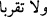
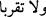
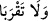

“Cennet meyvalarından istediğiniz zaman her yerde bol bol yeyin” meyvalar bitecek
diye sıkıntıya düşmeyin, Allah Teâlâ yasak ağaçtan yemek için bahâne bulamasınlar
diye, onlara her türlü nimeti bol bol sunmuştur. Allah Teâlâ: “yeme emrini” her ikisine
birden yöneltmiştir. Yerleşme ve ikamet husûsunda Âdem (a.s.) asıl olduğu için önceki
âyette Havvâ O’na tâbi kılınmıştı, yeme-içme husûsunda ise Havvâ vâlidemiz asıldır.
Bu yüzden âyetteki emir ikisine de yöneltilmiştir. Allah Teâlâ’nın Âdem (a.s.)’i halîfe
olarak seçmesine ve şerefli kılmasına rağmen, yemeyi emretmesinin hikmeti, onun
mahlûk olduğunu hatırlatmaktır. Mahlûk olana yaraşan başkalarıyla kaynaşmak ve
ihtiyaçlarını gidermektir.
Sadece şu ağaca yaklaşmayın; yâni ondan yemeyin. Eğer yasaklanan şey ağaca
yaklaşmak olsaydı (
) fiilin “râ”sı ötreli olurdu. Sonuncu takdîre göre âyet “Şu
karşınızda duran ağaca yaklaşmayın” mânâsına gelir. Allah Teâlâ, direk olarak
“ağaçtan yemeyin” yerine “ona yaklaşmayın” buyurarak bu yasağa uyulmasının ne
kadar önemli olduğunu göstermiştir. Sûfîlerce meşhûr olan görüşe göre “şecere”den
maksad, buğday ve buğday başağıdır. Çünkü insanoğlunun beslenmesinde en önemli rol
ona âiddir. Buğday başağının tazeyken rengi çok güzeldir, ürünü olan un, baldan tatlı,
kardan beyaz, köpükten daha yumuşaktır. Allah Teâlâ başağı insanoğluna rızık olarak
vermiştir.
Âdem (a.s.)’in buğday başağı yediğinden onun zirâatiyle imtihan olunduğu rivâyet
edilmiştir. Başka bir rivâyete göre Âdem (a.s.) üzüm yemiş, bu yüzden ondan yapılan
içki haram kılınmıştır. Bu ağacın incir ağacı olduğu da söylenmiştir. Kesin bir nass
olmadığı için bu ağacın ne olduğunu tayin etmemek evlâdır. Eğer bu ağaçtan yerseniz
zâlimlerden olursunuz. Âyetin bu kısmını (
) lâfzına atıf edersek mânâsı: “Bu
ağaca yaklaşmayın ve zâlimlerden olmayın” demektir. İ’râbı da meczûm olur. Eğer âyeti
(
) nehyine cevap kabûl edersek mânâ şöyle olur: “Bu ağaca yaklaşmayın, eğer
yaklaşırsanız zâlimlerden olursunuz.” Bu ağaçtan yiyenler Allah’ın yasağını çiğnemişler
ve onun koyduğu sınırları aşmışlardır. Bu yüzden, diğer birçok nîmetten mahrûm
kalmışlardır.
Bâzı mânâ ehli (
) emrinin; Âdem (a.s.)’ın bu hatâyı işleyerek cennetten
çıkarılacağına işâret olduğunu söylemişlerdir. Çünkü cennette ebedî olarak kalacak
kimseye hiçbir şey yasaklanmaz ve mahzurlu görülmez. Zâten “Muhakkak yeryüzünde
bir halîfe yaratacağım” (el-Bakara, 2/30) âyeti bu görüşü desteklemektedir.
Şeyh Necmeddin (k.s.) bu âyeti şöyle tefsir etmiştir: Allah Teâlâ’nın Âdem’e olan bu
hitâbı, onu imtihan içindir. O’nun ağaçtan yemesini yasaklaması, bir çeşit nazlanmadır.
Âyetteki ağaç muhabbet ve mağfiret ağacıdır. Allah Teâlâ bu ağacı yasaklamakla
Âdem’de bir merakın uyanmasına vesîle olmuştur. Çünkü insanoğlunda yasaklara karşı
aşırı bir düşkünlük ve merak vardır. Neticede Âdem (a.s.) ağaçtan yemiştir. Böylece
hilâfetin ve muhabbetin sırları ortaya çıkmıştır. Allah’ın Gaffâr, Settâr, Tevvâb gibi
cemâl sıfatları ile Kahhâr gibi celâl sıfatları tecellî etmiştir. Velhâsıl Allah Teâlâ,
Âdem’in ağaçtan yiyeceğini bildiği halde, ona yemeyi yasaklaması, onun işlediği